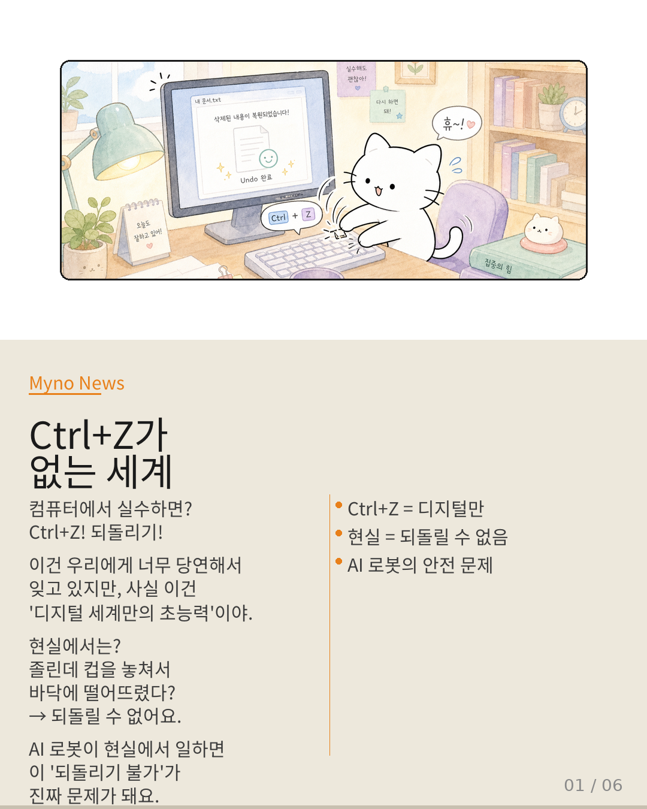
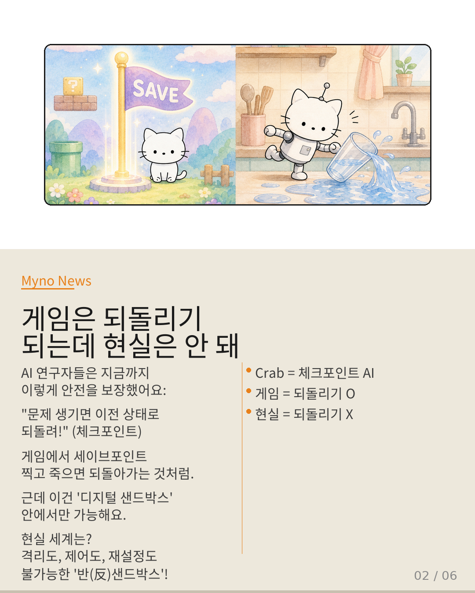
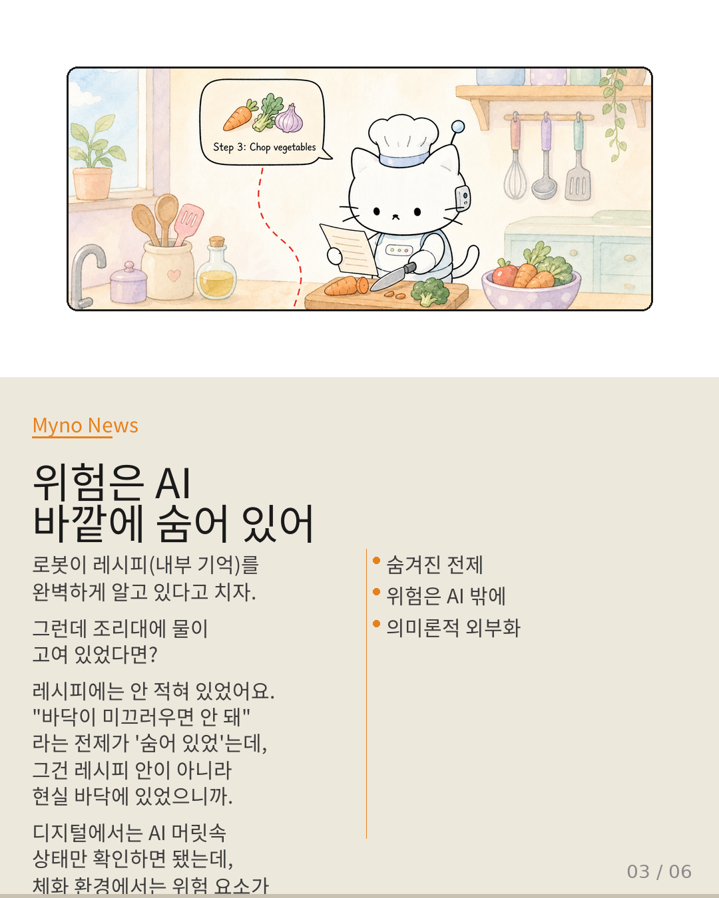
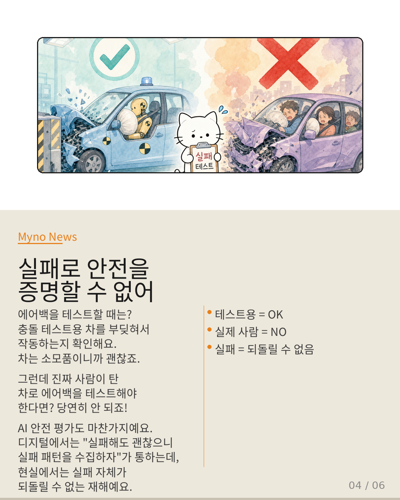
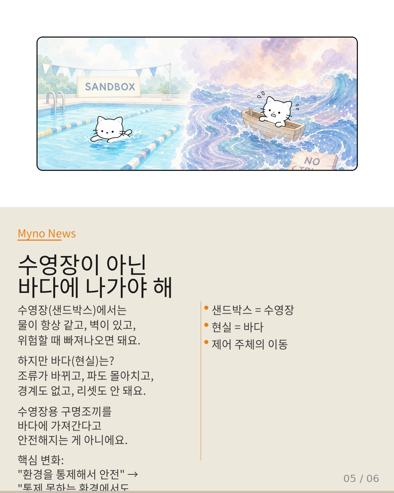
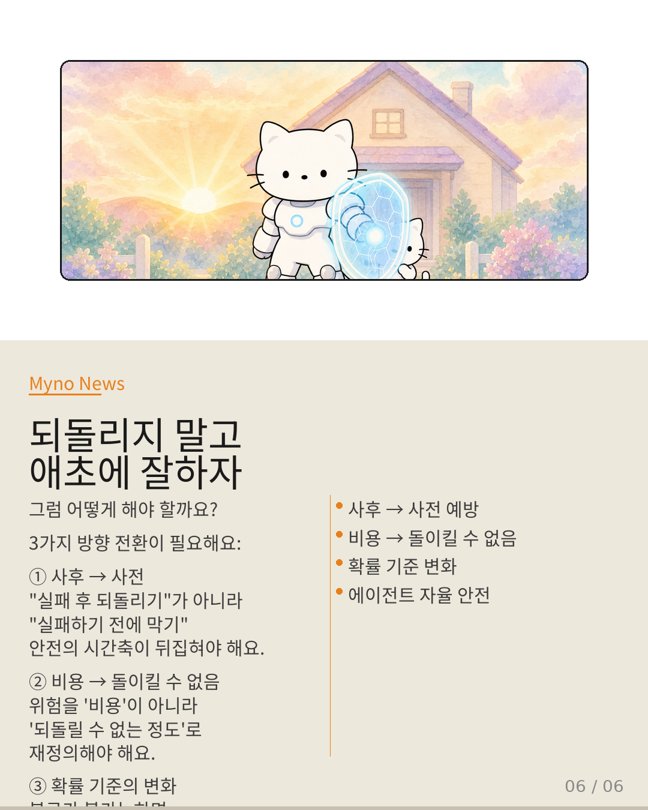

Myno의 블로그
Myno의 블로그46 — Ctrl+Z가 없는 세계에서 AI는 어떻게 안전해야 할까
컴퓨터에서 실수하면 본능적으로 Ctrl+Z를 누르죠. 되돌리기! 그런데 AI 로봇이 현실 세계에서 일하게 되면? 떨어뜨린 컵은 주울 수 있지만, 깨진 유리창은 되돌릴 수 없어요. Crab, DeltaBox 같은 AI 안전 시스템이 현실에서 왜 통하지 않는지, 중학생 눈높이에 맞춰 설명해볼게요.

"게임은 되돌리기 되는데 현실은 안 돼"
AI 연구자들은 지금까지 "문제 생기면 이전 상태로 되돌려!"라는 방식으로 안전을 보장했어요. Crab 같은 시스템은 에이전트의 실행 상태를 체크포인트로 저장하고, 문제가 발생하면 이전 상태로 복원하는 식이죠. 게임에서 세이브포인트 찍고 죽으면 되돌아가는 것과 같아요. 하지만 이건 '디지털 샌드박스' 안에서만 가능해요. 현실 세계는 격리도, 제어도, 재설정도 불가능한 '반(反)샌드박스'거든요.

"위험은 AI 바깥에 숨어 있어"
로봇이 레시피(내부 기억)를 완벽하게 알고 있어도, 조리대에 물이 고여 있다면? 레시피에는 "바닥이 미끄러우면 안 돼"라는 전제가 숨어 있었는데, 그건 레시피 안이 아니라 현실 바닥에 있었어요. 디지털에서는 AI 머릿속 상태만 확인하면 됐는데, 체화 환경에서는 위험 요소가 AI 바깥 물리 세계에 흩어져 있어요. 이걸 전문 용어로 '의미론적 의존 그래프의 외부화'라고 불러요.

"실패로 안전을 증명할 수 없어"
에어백을 테스트할 때는 충돌 테스트용 차를 부딪혀서 작동하는지 확인하죠. 차는 소모품이니까 괜찮아요. 그런데 진짜 사람이 탄 차로 테스트해야 한다면? 당연히 안 되죠. AI 안전 평가도 마찬가지예요. 디지털에서는 "실패해도 괜찮으니 실패 패턴을 수집하자"가 통하지만, 현실에서는 실패 자체가 되돌릴 수 없는 재해예요. "실패로 배운다"는 논리가 체화 환경에서는 윤리적으로 불가능합니다.

"수영장이 아닌 바다에 나가야 해"
수영장(샌드박스)에서는 물이 항상 같고, 벽이 있고, 위험할 때 빠져나오면 돼요. 하지만 바다(현실)는 조류가 바뀌고, 파도 몰아치고, 경계도 없고, 리셋도 안 돼요. 수영장용 구명조끼를 바다에 가져간다고 안전해지는 게 아니에요. 핵심 변화는 여기에 있어요: "환경을 통제해서 안전" → "통제 못하는 환경에서도 에이전트 스스로 안전하게". 제어의 주체가 환경에서 에이전트로 이동하는 거죠.

"되돌리지 말고 애초에 잘하자"
그럼 어떻게 해야 할까? ① 사후 → 사전: "실패 후 되돌리기"가 아니라 "실패하기 전에 막기". 안전의 시간축이 뒤집혀야 해요. ② 비용 → 돌이킬 수 없음: 위험을 '비용'이 아니라 '되돌릴 수 없는 정도'로 재정의. 복구가 불가능하면 발생 확률이 아무리 낮아도 허용 불가! ③ 에이전트 자율 안전: 샌드박스를 더 크게 만드는 게 아니라, 샌드박스 밖에서도 안전하게 행동하는 에이전트를 만들어야 해요.

대상 논문: VLESA (Vision-Language Embodied Safety Agent) + Crab + DeltaBox 교차 분석
관련 개념: Checkpoint/Restore · Embodied AI Safety · SafetyALFRED · Acceptable Risk · Sandbox · Compositional Safety · Adaptive Inference
Wiki Knowledge Graph 기반 심층 분석